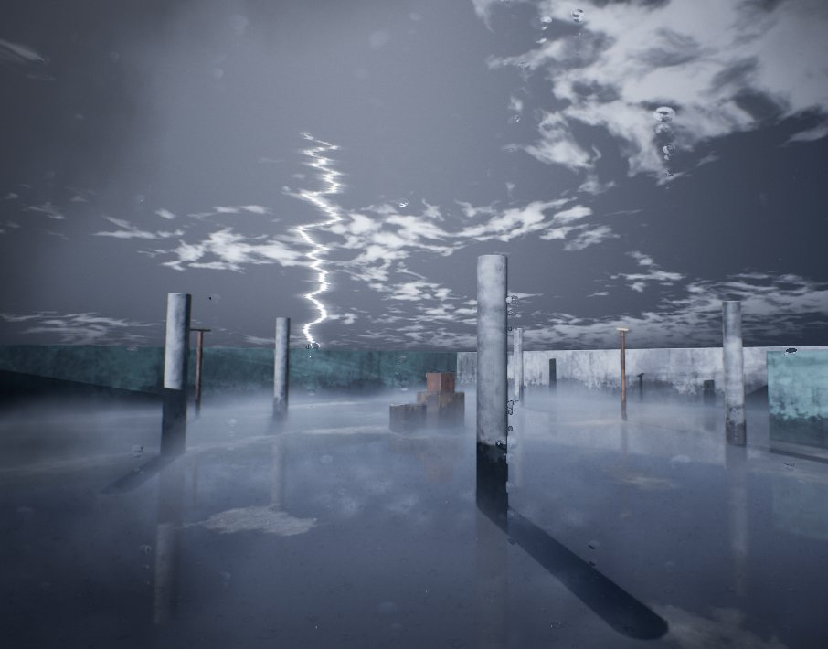

Storms and lightning
Lightning comes with a weather, such as Storm and Dry Lightning. A strike lights your level from the sky with real shadows, and always stays under the common limit for flashing light.


How a strike works
- A strike flashes one to three times, 0.4 seconds apart, so never more than 3 times a second.
- Strikes come at least 4 seconds apart, even the ones you ask for.
- Its light casts shadows, so a room only takes the flash through its doors and windows. The rest of the room stays dark.
- The clouds light up from behind, and some strikes show a jagged bolt under the clouds.
- Storm strikes about 4 times a minute. Dry Lightning flickers fainter in clouds with no rain, often with no bolt.
Strike when you want
- Test Lightning on the Fit tab strikes at once, in any weather.
- Trigger Lightning does the same from a Blueprint. Good for a scare.
- A Mood Event with Lightning ticked strikes as the player walks in.
The Lightning slider sets how often a weather strikes by itself. At 0% it stops, while the rain and wind go on, and a strike you ask for still comes.
Flashing light and your players
Weather Zones
A Weather Zone changes the weather while the player is inside it: a storm on the cliffs, snow in the mountains. Add one with Add Weather Zone on the Place tab, or drag BP_MoodWeatherZone from MoodKit > Core, then scale it.
Weather Zone (BP_MoodWeatherZone)
| Value | Range | Default | What it does |
|---|---|---|---|
| Weatherweather asset | empty | The weather while the player is inside, such as WX_Snow or WX_Storm. Leave empty for the mood's own weather. | |
| Blend Secondsnumber | 0 to 30 | 5 | How long the change of weather takes. |
| Restore On Exitswitch | ticked | Goes back to the earlier weather when the player leaves. | |
| Ground At Onceswitch | unticked | The ground takes this weather's look at once, as if it had always been here, instead of soaking or turning white over time. |
The Mood Lab has a Weather Zone named StormCorner in a corner of the courtyard. Press Play and walk into it to watch a storm roll in.